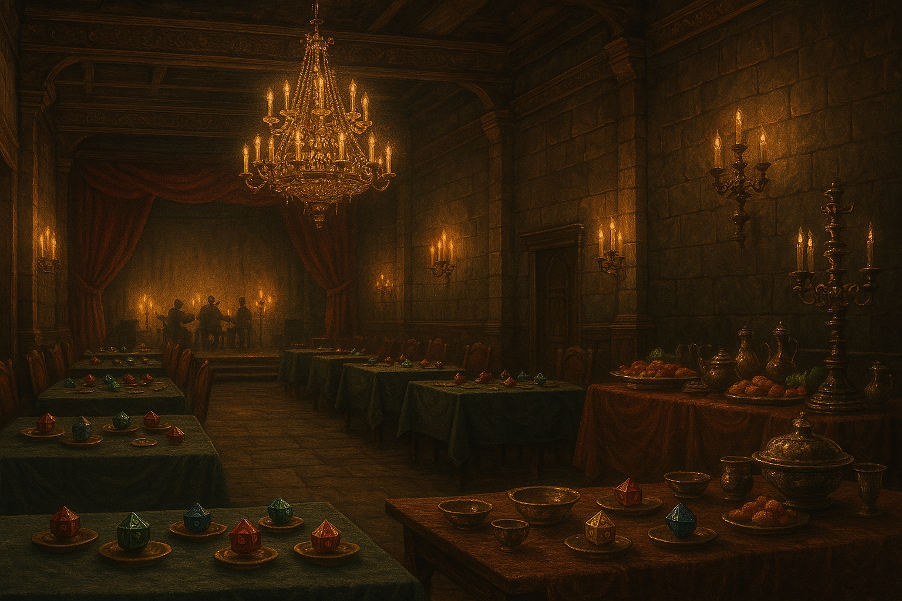

Chapter 1: A Feast of the Exquisite
Gathering of the Chosen


Gathering of the Chosen
15049.03.19
冒險者們上了馬車後，發現已經有一人在馬車上了。這名紅髮的年輕男子不多話，從袍子底下看了一眼冒險者們，便繼續沈浸在自己的世界內了。在阿龍的搭話下，才得知他名為賽希爾，是一名貴族法師學徒。同時，阿龍也向賽希爾介紹了同行的夥伴們。見到羅羅那標誌性的妖精耳朵，他不自覺得微微露出了輕蔑的神情。
因為已經是半夜，雷亞和羅羅上車不久後便入睡了。賽希爾從背包中拿出一張紙，開始書寫。在鑰和毛毛的好奇心下，賽希爾解釋他正在寫自己的遺書，他的背包內有不少過去寫過的版本。在賽希爾的同意下，鑰拿走了一份作為留念，也藉機教不識字的阿龍認普通語的字（阿龍學會了爸爸、媽媽、遺產等字後，便覺得今天學夠了）。
對於這趟車程的時長，賽希爾表示他上次來的時候，睡了一覺就到了，雖然不確定這一覺到底是多長，但冒險者們還是決定先睡了再說。
幾個小時後，羅羅和毛毛兩人醒來了，拉開馬車的簾子，他們發現外面似乎是荒郊野外，顯然已經離開貝瑟頓好一段距離了。毛毛拉開前面的簾子，試圖從馬車車伕口中詢問剩餘的距離，但車伕對於還醒著很意外，表示不會太久，要他們先去睡。兩人決定保持清醒，隨時注意路邊的狀況。
同時間，對於陌生的賽希爾，毛毛也在確認賽希爾睡死的前提下偷偷翻了他身上的東西，發現口袋內有不少厚重的金幣，但他並沒有選擇拿走，只是把玩了一番而已。
幾個小時後，天已經亮了，馬車卻沒有停下來的意思，唯二清醒的毛毛和羅羅只好繼續等待。一段時間後馬車竟然停了下來，但車門並沒有打開，而且夥伴們也都還在熟睡之中。待馬車再度啟程後，他們才知道是車伕去買了食物，他們也從車伕手中取得了排隊排到的麵包。
這趟旅程異常的漫長，晚餐時間時車伕很自動的幫兩人也買了晚餐。而熬了一整天的毛毛最終還是決定先睡一會兒，只留下羅羅自己一人清醒著。
15049.03.20
當馬車再次停下時，天已經亮了，冒險者們也一一甦醒了。車伕下了車後，把左右兩側的車門打開，便先離開了。大家紛紛下了車，看見旁邊也停了滿滿的馬車，少說有二三十輛，更外側則有花園，有不少穿著貴族裝束的人們正在逛著。而在正前方，則是一棟又大又華麗的宅邸聳立。然而尷尬的是，放眼望去，除了冒險者外，並沒有其他非人類的存在。
阿龍因為尿急，快速跑到了花園邊小解，旁邊看見的貴族們紛紛露出嫌惡的表情，與阿龍保持一段距離。
冒險者們站在馬車邊，不太確定接下來該去哪裡，甚至也不太確定自己為何會在這裡。不久後一名傭人來到冒險者面前，逐一和他們確認身份，接著便帶他們一同走入宅邸。
推開雙開的大門，冒險者們沒見過這麼大的豪宅。在傭人的說明下，他們在晚宴前可以隨處逛逛，唯一的規定是不得爬上三樓諾曼爵士的私人空間，地下一樓、一樓和二樓，甚至外面的花園、賓客大樓都可以走走。
冒險者們先走到一樓底端交誼廳旁的更衣室，選擇了自己喜歡的服裝後，便各自分開了。
換裝後，鑰和推著他的阿龍一起行動。鑰先詢問了一名看起來飽腹詩書的賓客，想詢問關於今日活動的流程。這名名為賽門・李的賓客說明了今天晚上晚宴後，明天會有正式的集會，兩天一夜的活動便結束了。
接著兩人決定到外面去晃晃。走到花園，阿龍看見一名比他體格還要壯碩的女子，十分開心，便找他攀談。然而這位名為克莉絲汀・亨佛瑞斯女士的女子是名貴族子嗣，雖然身體壯碩，卻喜愛較為文靜的活動，其中他最喜歡的是大自然的各種生物，如花園內的花草等。阿龍聽了十分失望，便詢問是否有地方能找人比武。克莉絲汀・亨佛瑞斯女士指著後側的花園，表示那邊有一群人聚集著正在打鬥，阿龍一聽便興奮地嚎叫並大步邁去，留下鑰和克莉絲汀・亨佛瑞斯女士談天。
後側的花園聚集了一群人。在阿龍暫定不久後，便有一名賭頭來詢問他是否要下注？從精壯的艾凡・卡爾斯登和普通身材的歐謝・沐兩人中，阿龍毫無遲疑地選擇了肌肉，而他的選擇也給了他值得的回報，艾凡在一陣拼搏中贏了下來。興奮的阿龍表示他也想參加，便踏入了競技圈內。大家在阿龍喊話後感到十分興奮，場子被炒得頗熱。而一名比克莉絲汀・亨佛瑞斯女士又更為壯碩的男子站到了阿龍的對面，比賽即將開始。聽見場邊的鼓噪聲，還在前側花園談天的鑰在克莉絲汀・亨佛瑞斯女士的幫助下也來到了場邊加油，同時注意著是否有需要從中介入的時機。從場邊的喊聲聽起來，兩方的支持人數相當，但僅過了幾秒，對面的男子便被阿龍揍到倒地了。
阿龍興奮的叫著，希望有其他人上來和他比武，但場邊的人竟然紛紛散去，只剩下裁判、賭頭，以及鑰，和躺在地上的對手。從離場的人們耳語中，阿龍得知這是他的對手第一次在這裡倒下，令阿龍聽了更為興奮。不久後，對手清醒了，和阿龍寒暄了一番，表示自己名為布魯斯・塔里斯。鑰也幫布魯斯做了簡單的治療，以免剛從昏迷中甦醒的他很快又倒下。三人決定先去地下室的宴會廳拿點吃的，補補體力。
毛毛換完衣服後便直攻酒吧。他點了杯啤酒，雖然酒保僅僅是拿出了一瓶罐裝的啤酒倒入杯中，但在毛毛口中，這啤酒竟然異常的好喝，讓他感到十分驚艷。
接著毛毛看見了他位子旁邊的兩人，試圖加入他們的話題。坐在他旁邊的女子名為朱諾・霍普金斯，而朱諾身邊的則是提摩西・溫斯頓。在朱諾的說明下，朱諾和毛毛一樣都是被稱為「基礎級別」的最基礎階級，而提摩西則是高了一層的「天賦者」，他們有較好的住宿和集會時更好的座位，除此之外，他們還有機會可以挑戰更高階級的「方尖碑」。
在毛毛好奇求問下，他得知 T.I.D.E.S. 組織的架構大概如下：
最基礎的層級是「基礎級別」，是被邀請加入組織的，具體原因不清楚。
向上一級是「天賦者」，共 10 人，在人數有漏缺時，會由高層從「基礎級別s」欽點加入。「天賦者」有機會利用挑戰的機制，升級為向上一階級的「方尖碑」。挑戰的方式為找到其中一名「方尖碑」的專屬寶物，若挑戰成功，則會加入該階級，被挑戰的成員則會被逐出組織，他和家族成員皆永遠不得再加入；若挑戰失敗，則為挑戰者被逐出組織，他和家族成員永遠不得再加入。
「方尖碑」共有 4 人，為世襲制或由「天賦者」挑戰成功升上。他們與「至高領導」，即諾曼爵士，為組織的高層核心，不過他們到底有什麼權利，並不清楚。其中萊里・里奇蒙便是此階層的成員之一，由巴托斯爵士傳位給他。
「至高領導」，即弗雷德里克・諾曼爵士。組織中最高且不會被取代的人，世襲制。
在酒吧待了一陣子後，毛毛決定到樓下宴會廳繞繞。毛毛看見熟悉的賽希爾正在和兩名陌生人聊天，便湊了過去。這兩位自稱為凱瑟琳・慕恩和崔斯坦・派瑞，而從他們的口中得知，這次集會似乎會宣布「天賦者」有人員的異動，而三人也十分興奮期待自己有沒有機會被選上加入該階層。
接著毛毛跑去找其他賓客，看見了兩名女子，便爬到他們旁邊的椅子上賣萌。名為菲比・馮・洪的女子穿著很明顯是貴族，但從他的口吻中，他似乎有挺嚴重的歧視觀念；羅莎琳・陳則給人一種聰明犀利的感覺。
羅羅在更衣室內並沒有換任何裝束，但雷亞現身時換了一身女僕裝。他急切地想要嘗試扮演女僕，便在和旁邊的女傭詢問後，端走對方的托盤，但他並不知道自己要將上面的餐點送到哪邊去。直到最後女傭告訴他客人就在原地後雷亞才停下腳步，客人面露不悅的取走了自己的餐點，雷亞才把托盤還給女傭。
接著羅羅和雷亞也去了酒吧。他們兩人挑了位子後，便和酒保點了個甜的。沒多久後，兩杯液態甜點便送上了桌。眼看漂亮的外型，一喝，羅羅馬上就滿意了。然而，在雷亞暫時離開時，一名男子自行坐在了雷亞原本的座位上，而且對羅羅搭訕，要請他喝一杯。在男子的堅持下，羅羅又點了一杯甜的，然而整段時間內男子竟然沒有對羅羅說任何其他的話或做任何事，只有在雷亞回來時示意他羅羅旁邊還有一個位子可以坐。離開前，男子表示自己叫喬吉歐・勒伯朗，若有任何需要幫忙，在這兩天內都可以找他。
離開酒吧後，兩人步出了宅邸外。雷亞難得看見了一名沒有閃躲他眼光的人，是一名看起來不到十歲的小女孩。雷亞試圖利用糖果吸引小妹妹的注意，但小妹妹僅對他微笑，並沒有接近他。最終雷亞還是和他直接對話，得知這名自述被稱為「小神童」的小女孩叫英格麗・貝爾。對於小神童這個綽號，羅羅和雷亞都感到有點起疑，但兩人還是繼續和英格麗對話。不久後，小神童似乎失去了對兩人的興趣，於是就離開了，雷亞和羅羅只好默默走回宴會廳去吃點東西。
在鑰暫時離開時，阿龍和布魯斯聊起了「當貴族是什麼感覺」的話題，因此開始玩起了「貴族遊戲」，兩人輪流扮演貴族和僕人，貴族可以無條件要求僕人做某件事，而僕人必須順從。最終布魯斯在阿龍的要求下必須把盛的滿滿的兩盤肉全部吃完，讓他感到十分絕望。幸好鑰及時看見，阻止他們。
在這個「僕人必須無條件聽命於貴族」的貴族遊戲中，阿龍想起了以前在村中被同齡人霸凌的經過，心中為以前傻呼呼的自己感到不值得。又發現新朋友布魯斯在貴族遊戲之後竟然有意地在躲避自己，這讓阿龍的又一次想起被排擠的難過。此刻阿龍的腦子依舊沒有多少智慧，心中卻是五味雜陳。他想著「貴族=欺負人=讓人不開心=壞蛋=需要被推翻」？
也許是思考太費力了，阿龍又餓了起來，他於是放棄思考，將注意力集中在桌上的美食。
鑰和阿龍發現同行的毛毛正在和兩名女子聊天，甚至讓女子們摸他的毛。當鑰和阿龍提及剛剛阿龍和布魯斯在玩的「貴族遊戲」時，菲比詢問了毛毛是否有興趣在集會後一起去他家，讓他做他的僕人，可以給他很多錢，還有無限多的雞腿。聽到這樣的內容，一旁的羅莎琳尷尬地默默離開座位。菲比從包包拿出一張制式但顯然有很多漏洞的合約時，毛毛心動了，鑰趕緊勸說毛毛要他仔細想想，最終菲比要毛毛在集會結束時再告訴他他的答案，然後便離開了。對話結束不久後，雷亞和羅羅也加入了其他人。
大家討論著接下來晚宴前要做什麼事情。鑰感到疲倦，想要先去客人房找個房間休息一下；雷亞邀請剛吃完盤內所有肉的阿龍來個大胃王競賽；毛毛和羅羅私下討論一起上去三樓探索，但羅羅在嘗試擲硬幣數次，都接不住硬幣的情況下（被他視為厄運），決定不去了。
鑰慢慢移動到客人房，在一樓找了間空房間。走進去後，聽見了機械化的聲音，以他的名字稱呼並歡迎他，然後自動將門關上了，令他感到十分驚奇。放完行李後，鑰來到了一樓的酒吧，看見了一名稍微年長的紳士，詢問後便與他同桌。
希奧多・伊登爵士禮貌的和鑰打招呼，並表示自己是方尖碑階級的，同時也說明了當時是透過「挑戰」制度才上到這個階級。鑰對於組織的運作等有些興趣，因此伊登爵士也對他稍作解說。
鑰在這裡慢慢休息，直到聽見晚宴的鐘響，才和伊登爵士一起移動到宴會廳。
在雷亞的邀約下，阿龍繼續吃東西。不久後，雷亞便投降了，阿龍的胃像是毫無限制般，直到傭人前來請他留些食物給其他客人，他才停了下來。
毛毛先爬到了二樓，看見二樓的房間門上都有印上名字。除了他知道的萊里・里奇蒙女士以外，也看見了稍早在酒吧認識的提摩西・溫斯頓的房間，因此他敲了敲提摩西的房門，房門便打開了。
毛毛看見提摩西的房間十分寬敞，桌上放著雜亂的紙張，而且上面有不少名字。在詢問後，毛毛得知這是提摩西意外得到的賓客名單，他正在對一些名字做研究。不久後，毛毛便先行離開了。
毛毛小心翼翼地走上三樓，卻發現毫無阻礙。他看見左右兩側皆有很大的房間。仔細聆聽後，右側房間沒有任何聲音，左側房間則傳來一名老年男子、一名中年女子和一名中年男子的說話聲。
毛毛悄悄的走過房間，看見有一扇雙開的大門，小心翼翼地拉開，同時感覺到了一隻手壓在他的肩膀上。毛毛回頭，一名老人微笑著，自我介紹自己是諾曼爵士。諾曼爵士向毛毛說明，這扇門是通往智慧之神喬里森的祭祠。對於毛毛可以順利走到這裡不被阻攔，諾曼爵士表示自己感到十分印象深刻，因此把門拉到全開，讓毛毛可以好好看一看裡面。
毛毛看到一大面橫幅的牆，上面有海水、浪潮、風暴的雕刻，十分精美。諾曼爵士表示這道牆後就是祭祠了，是他們和喬里森溝通的地方，因此不能讓他再往後走了。同時，諾曼爵士邀請他一起向喬里森禱告，毛毛學著爵士雙手合十，似乎從喬里森那裡聽到一點聲音，但並不清楚到底聽見了什麼。
諾曼爵士護送毛毛走下二樓，內心還對於自己剛被宅邸主人抓到而震撼不已的毛毛默默走回一樓，和前來迎接他的羅羅相會。
除了鑰之外的冒險者們回到了地下室宴會廳，看見傭人們正在移動場內的佈景，將椅子全部搬走，搬來了不少檯子，上面放了一盅一盅漂亮的骰子。正中央的空間被清的很空，自助餐區則換上了更漂亮的容器。
舞台的簾幕被拉開，樂手們隨著鐘聲響起後開始演奏。
15049.03.19
After boarding the carriage, the adventurers found that someone was already inside. This red-haired young man was not very talkative. He gave the adventurers a glance from beneath his robe, then sank back into his own world. Only after Al-lon started talking to him did they learn that his name was Cecil, a noble mage apprentice. Al-lon also introduced the rest of the party to Cecil. At the sight of Roel's distinctive elven ears, Cecil unconsciously showed a faint look of disdain.
Since it was already the middle of the night, Leah and Roel fell asleep soon after getting on board. Cecil took out a sheet of paper from his pack and began writing. Out of Kaname and Fur's curiosity, Cecil explained that he was writing his will, and that he had quite a few older versions in his bag already. With Cecil's permission, Kaname took one copy as a keepsake, and also used the opportunity to teach the illiterate Al-lon a few words of Common. After learning words like "father," "mother," and "inheritance," Al-lon decided he had studied enough for one day.
When asked how long the trip would take, Cecil said that the last time he came, he slept once and arrived. Although he was not sure how long that sleep had actually been, the adventurers decided they might as well sleep first and find out later.
A few hours later, Roel and Fur woke up. Pulling back the carriage curtain, they found that they seemed to be out in the middle of nowhere, clearly far from Batherdon by now. Fur opened the front curtain and tried to ask the driver how much farther remained, but the driver seemed surprised they were still awake and told them it would not be much longer, so they should go back to sleep. The two decided to stay awake and keep watch on the roadside conditions.
At the same time, Fur, still wary of the unfamiliar Cecil, secretly searched through his belongings after confirming that Cecil was sound asleep. He found quite a few heavy gold coins in Cecil's pockets, but chose not to take any, only to toy with them for a bit.
Several more hours passed. Dawn had already broken, yet the carriage showed no sign of stopping, so Fur and Roel, the only two still awake, could do nothing but keep waiting. After a while, the carriage did stop, but the door did not open, and the others were still asleep. Once the carriage set off again, they learned that the driver had simply gone to buy food, and he handed them bread that he had waited in line to get.
The journey was unusually long. By dinnertime, the driver had automatically bought dinner for the two of them as well. After staying awake the entire day, Fur eventually decided to sleep for a while, leaving only Roel awake.
15049.03.20
When the carriage stopped again, daylight had already come, and the adventurers woke one by one. After the driver stepped down and opened the doors on both sides of the carriage, he left them there. Everyone got out and saw rows upon rows of other carriages parked nearby, at least twenty or thirty of them. Beyond them lay gardens where many finely dressed nobles were strolling about. Directly ahead stood an enormous and lavish manor. The awkward part was that, as far as they could see, aside from the adventurers themselves, there were no other nonhumans present.
Needing to relieve himself urgently, Al-lon quickly ran to the edge of the garden to pee. The nearby nobles all showed expressions of disgust and kept their distance from him.
The adventurers stood beside the carriage, not quite sure where they were supposed to go next, or even why they were really here. Before long, a servant approached them, confirmed each of their identities one by one, and then led them into the manor.
Pushing open the double doors, the adventurers found themselves inside the largest mansion they had ever seen. According to the servant, they were free to wander about before the evening banquet. The only rule was that they were not to go up to Syr Norman's private quarters on the third floor. The basement level, first floor, second floor, the outer gardens, and even the guest building were all open to them.
The adventurers first went to the dressing room beside the lounge at the far end of the first floor. After choosing outfits they liked, they split up.
After changing clothes, Kaname and Al-lon, who pushed her cart, stayed together. Kaname first approached a guest who looked scholarly and well-read, hoping to learn the schedule for today's event. The guest, a man named Simon Lee, explained that there would be a formal gathering tomorrow after tonight's banquet, and that the two-day, one-night event would end after that.
The two then decided to stroll outside. In the garden, Al-lon spotted a woman even more heavily built than he was and was delighted, immediately striking up a conversation. This woman, Lady Kristen Humphries, was of noble birth. Although powerfully built, she preferred quieter pursuits, and her favorite things were the various forms of life in nature, such as the flowers and plants in the garden. Al-lon was very disappointed to hear this, and asked whether there was anywhere he could find people to spar with. Lady Humphries pointed toward the back garden, saying that there was a crowd gathered there fighting. The moment Al-lon heard that, he howled with excitement and strode off, leaving Kaname to chat with Lady Humphries.
A crowd had gathered in the rear garden. Not long after Al-lon arrived, a bookie came up and asked whether he wanted to place a bet. Faced with the choice between the well-built Ivan Karsten and the more ordinary-looking O'Shae Moo, Al-lon chose muscle without the slightest hesitation, and his choice paid off when Ivan won after a hard-fought struggle. Excited, Al-lon declared that he wanted to join too and stepped into the fighting circle. The crowd became energized by his shouting, and the atmosphere grew lively. A man even more massive than Lady Humphries stepped up to face Al-lon, and the match was about to begin. Hearing the commotion from ringside, Kaname, who had still been chatting in the front garden, came over with Lady Humphries's help to cheer him on while also keeping an eye out in case she needed to intervene. Judging by the shouting around the ring, both sides had about the same number of supporters, but only a few seconds later, the man opposite Al-lon was punched to the ground.
Al-lon shouted excitedly, hoping someone else would come challenge him, but the onlookers actually began to disperse, leaving only the referee, the bookie, Kaname, and the fallen opponent. From the whispers of the people leaving, Al-lon learned that this was the first time his opponent had ever gone down here, which only made him even more excited. Before long, the man regained consciousness and exchanged a few words with Al-lon, introducing himself as Bruce Tallis. Kaname also gave Bruce some simple treatment so he would not collapse again right after waking up. The three decided to head to the basement banquet hall first and grab something to eat to restore their strength.
After changing clothes, Fur headed straight for the bar. He ordered a beer. Although the bartender simply poured canned beer into a glass, Fur found it astonishingly delicious and was deeply impressed.
Fur then noticed the two people sitting next to him and tried to join their conversation. The woman beside him was named Juno Hopkins, and next to Juno sat Timothee Winston. Juno explained that she and Fur were both at the most basic rank, called the "Field," while Timothee was one level above them as a "Gifted." Gifted members received better lodging and better seats during gatherings. On top of that, they also had a chance to challenge for the higher rank known as the "Obelisk."
Out of curiosity, Fur asked for more, and learned that the structure of T.I.D.E.S. worked roughly like this:
The most basic level is the "Field." These are people invited into the organization, though the specific reason why is unclear.
The next level up is the "Gifted," of which there are ten. Whenever there is an opening, the higher-ups personally choose someone from the Fields to fill it. The Gifted also have a chance to advance to the next rank, the "Obelisk," through the challenge system. To issue a challenge, one must find the personal treasure of one of the Obelisk members. If the challenger succeeds, they join that rank, and the challenged member is expelled from the organization, with both they and their family forever barred from rejoining. If the challenger fails, then the challenger is the one expelled, and they and their family are likewise forever barred from joining again.
There are four "Obelisk" members. Their positions are hereditary, or can be earned by a successful challenge from a Gifted. Together with the "Supreme Leader," Syr Norman, they form the organization's high-ranking core, though exactly what powers they possess is unclear. Riley Richmond is one of the members of this rank, having inherited the position from Syr Bartosz.
The "Supreme Leader" is Syr Frederick Norman. He is the highest-ranking person in the organization, cannot be replaced, and the position is hereditary.
After staying at the bar for a while, Fur decided to wander downstairs into the banquet hall. There he spotted the familiar Cecil chatting with two strangers and went over to join them. The two introduced themselves as Catherine Moon and Tristan Perry. From their conversation, Fur learned that this gathering would apparently announce some changes among the Gifted, and all three of them were excited to see whether they might be chosen for that rank.
Next, Fur went looking for other guests. Spotting two women, he climbed up onto a chair beside them and tried to look cute. One of them, Phoebe van Horn, was very obviously dressed like a noble, but from the way she spoke, she seemed to hold some rather severe prejudices. Rosaline Chen, on the other hand, gave off the impression of being sharp and intelligent.
Roel did not change into any special outfit in the dressing room, but when Leah emerged, she was wearing a maid uniform. She eagerly wanted to try acting as a maid, so after asking one of the nearby maids a few questions, she took the other's tray, though she had no idea where she was supposed to deliver the food on it. Only after the maid finally told her that the guest was standing right there did Leah stop walking. The guest took the food with visible displeasure, and only then did Leah return the tray to the maid.
After that, Roel and Leah also went to the bar. Once they had picked their seats, they each ordered something sweet from the bartender. Before long, two liquid desserts were placed on the table. One look at the elegant presentation, one sip, and Roel was instantly satisfied. However, while Leah had briefly stepped away, a man sat down in Leah's seat and started flirting with Roel, insisting on buying him a drink. Under the man's insistence, Roel ordered another sweet drink. Yet throughout the whole exchange, the man did not actually say or do anything else to Roel, only gesturing when Leah returned that there was still a seat beside Roel. Before leaving, the man introduced himself as Georgio LeBlanc and said that if they needed any help over the next two days, they could come find him.
After leaving the bar, the two stepped outside the manor. For once, Leah saw someone who did not avoid her gaze: a little girl who looked to be less than ten years old. Leah tried to lure the girl over with candy, but the girl only smiled at her and did not come closer. In the end, Leah spoke to her directly and learned that the girl, who called herself a "little prodigy," was named Ingrid Bell. Both Roel and Leah found the nickname a little suspicious, but they continued talking with Ingrid anyway. Before long, the little prodigy seemed to lose interest in them and left, so Leah and Roel quietly returned to the banquet hall to get something to eat.
While Kaname was away for a while, Al-lon and Bruce got onto the topic of what it felt like to be a noble, and this led them to start playing a "noble game." They took turns playing the noble and the servant, where the noble could order the servant to do anything unconditionally, and the servant had to obey. In the end, at Al-lon's demand, Bruce had to eat two plates piled high with meat, which left him feeling utterly miserable. Fortunately, Kaname noticed in time and stopped them.
In this "noble game," where servants had to obey nobles without question, Al-lon was reminded of how he had once been bullied by children his own age back in the village, and he felt that his old foolish self had not deserved that treatment. Then he noticed that his new friend Bruce was deliberately avoiding him after the game, which made Al-lon once again think of the sadness of being excluded. His mind still held little wisdom, but his heart was full of tangled feelings. Was the equation "nobles = bullying = making people unhappy = bad guys = need to be overthrown"?
Perhaps thinking was simply too exhausting, because Al-lon soon became hungry again. So he gave up on thinking and focused his attention on the food before him.
Kaname and Al-lon noticed that Fur was chatting with two women and even letting them pet his fur. When Kaname and Al-lon mentioned the "noble game" Al-lon and Bruce had just been playing, Phoebe asked Fur whether he would be interested in coming home with her after the gathering to be her servant. She said she could give him lots of money, along with unlimited chicken legs. Hearing that, Rosaline awkwardly got up and quietly left her seat. When Phoebe pulled a standard contract from her bag, one that very obviously had plenty of loopholes, Fur was tempted. Kaname quickly urged Fur to think carefully. In the end, Phoebe told Fur to give her his answer when the gathering was over, then left. Not long after that conversation ended, Leah and Roel joined the others as well.
The group discussed what to do next before the banquet. Kaname felt tired and wanted to go find an empty guest room to rest in for a while. Leah invited Al-lon, who had just finished all the meat on his plate, to a gluttony contest. Fur and Roel privately discussed going up to explore the third floor together, but after Roel tried flipping a coin several times and failed to catch it every time, which he took as bad luck, he decided not to go.
Kaname slowly made her way to the guest rooms and found an empty one on the first floor. After entering, she heard a mechanical voice greet her by name and welcome her in, then automatically close the door behind her, which she found astonishing. After putting down her belongings, Kaname went to the bar on the first floor, where she saw a somewhat older gentleman. After asking a few questions, she ended up sharing a table with him.
Syr Theodore Eden politely greeted Kaname and explained that he was of the Obelisk rank, and that he had reached that position through the challenge system. Kaname was interested in how the organization operated, so Syr Eden offered her a brief explanation.
Kaname rested here quietly until she heard the bell for the banquet, at which point she and Syr Eden moved together to the banquet hall.
At Leah's invitation, Al-lon continued eating. Before long, Leah gave up. Al-lon's stomach seemed to have no limits at all, and he only stopped when a servant came over and asked him to leave some food for the other guests.
Fur first climbed up to the second floor and saw that the doors to the rooms there all had names on them. Besides Lady Riley Richmond, whom he already knew about, he also spotted Timothee Winston's room, the man he had met earlier at the bar, so he knocked on Timothee's door, and it opened.
Fur saw that Timothee's room was very spacious. There were messy papers spread across the table, and many names were written on them. After asking, Fur learned that this was a guest list Timothee had obtained by accident, and that he was researching some of the names. Before long, Fur took his leave.
Fur carefully crept up to the third floor, only to find that nothing stopped him. He saw large rooms on both the left and right sides. Listening carefully, he heard nothing from the room on the right, while from the room on the left came the voices of an elderly man, a middle-aged woman, and a middle-aged man.
Fur quietly passed by the room and saw a pair of double doors. He carefully pulled them open, only to feel a hand rest on his shoulder at the same time. Turning around, he saw an old man smiling as he introduced himself as Syr Norman. Syr Norman explained to Fur that this door led to the shrine of Jorisen, the god of wisdom. He said that he was deeply impressed that Fur had managed to make it this far without being stopped, and so he pulled the doors fully open to let Fur take a proper look inside.
Fur saw a huge wall like a hanging banner, carved with seawater, waves, and storms, all beautifully made. Syr Norman explained that the shrine lay beyond that wall, and that it was the place where they communicated with Jorisen, so he could not allow Fur to go any farther. At the same time, Syr Norman invited him to pray to Jorisen together. Fur imitated the Syr and clasped his hands, and seemed to hear a faint voice from Jorisen, though he could not make out what it said.
Syr Norman escorted Fur back down to the second floor. Still inwardly shocked that he had just been caught by the owner of the manor, Fur silently returned to the first floor, where he met up with Roel, who had come to find him.
All of the adventurers except Kaname returned to the basement banquet hall and saw the servants rearranging the room. They removed all the chairs and brought in a number of tables, each set with elegant cups full of beautiful dice. The central area had been cleared wide open, while the buffet area had been replaced with finer containers.
The curtain on the stage was drawn back, and as the bell rang out, the musicians began to play.